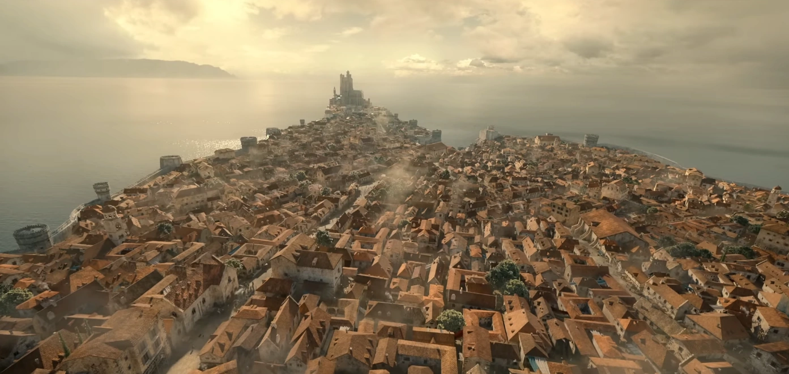
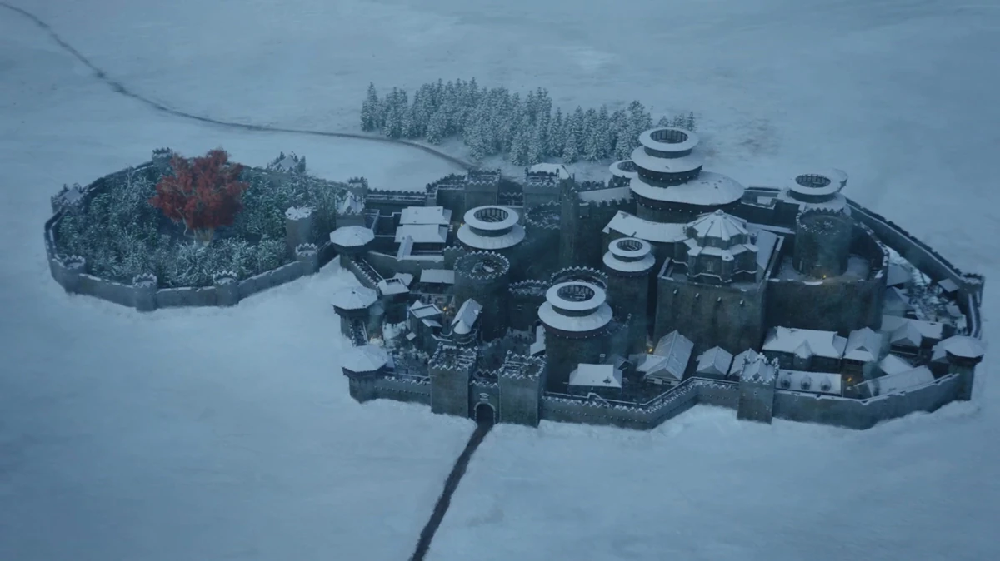
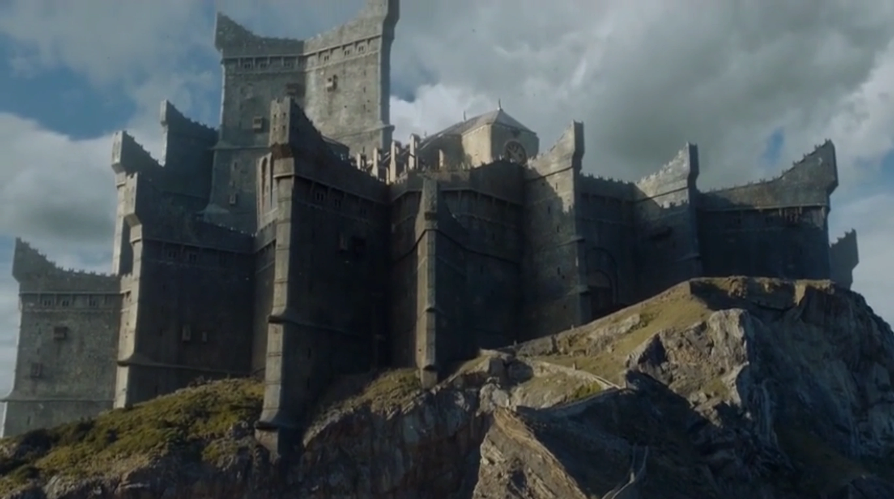
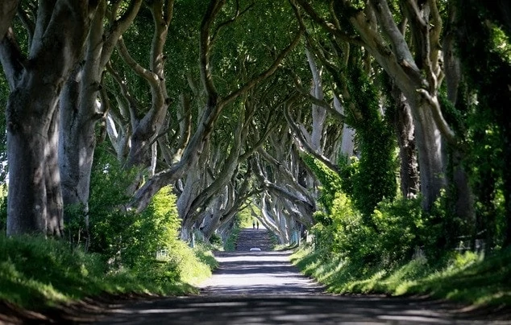
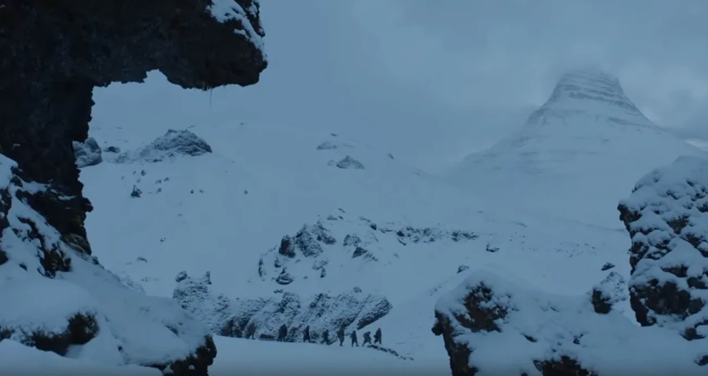
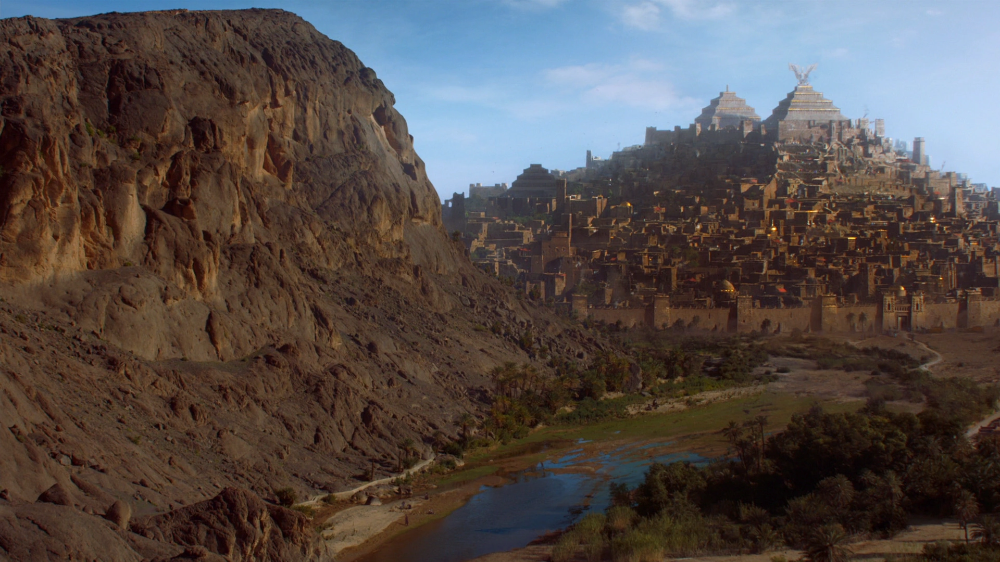
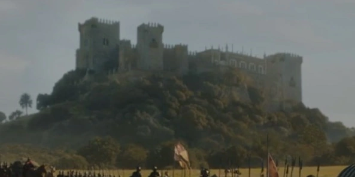

Location 01
King's Landing: Dubrovnik, Croatia
The breathtaking, walled coastal city of Dubrovnik served as the primary filming location for King's Landing. Fans can walk the exact stone streets where Cersei Lannister's infamous "Walk of Shame" was filmed, specifically down the Jesuit Staircase.
Find on Map
Location 02
Winterfell: Castle Ward, Northern Ireland
The ancestral home of House Stark was brought to life at Castle Ward, an 18th-century National Trust property. The historic farmyard was the site of the archery range where Jon Snow taught Bran to shoot in the very first episode.
Find on Map
Location 03
Dragonstone: Gaztelugatxe, Spain
The winding, dramatic stone footbridge leading up to Daenerys Targaryen's ancestral fortress is absolutely real. Located in the Basque Country of Spain, San Juan de Gaztelugatxe features 241 steps connecting the mainland to the rocky hermitage.
Find on Map
Location 04
The Kingsroad: The Dark Hedges, Northern Ireland
When Arya Stark escapes King's Landing disguised as a boy, she travels down a hauntingly beautiful, tunnel-like road of twisted beech trees. This natural phenomenon, planted in the 18th century, is known locally as The Dark Hedges.
Find on Map
Location 05
Arrowhead Mountain: Kirkjufell, Iceland
The "mountain shaped like an arrowhead" that The Hound sees in the flames—and where Jon Snow's party ventures to capture a wight—is Kirkjufell. It is one of Iceland's most photographed mountains, known for its distinct peak and nearby waterfalls.
Find on Map
Location 06
Yunkai and Pentos: Aït Benhaddou, Morocco
The ancient, mud-brick fortified village of Aït Benhaddou on the edge of the Sahara Desert stood in for the slaver city of Yunkai (the Yellow City), which Daenerys laid siege to, as well as parts of the Free City of Pentos.
Find on Map
Location 07
Highgarden: Castillo de Almodóvar del Río, Spain
The lush, wealthy seat of House Tyrell was depicted using this stunning Moorish castle in Andalusia. It was here that Jaime Lannister marched the Lannister army to sack the castle, and where Lady Olenna Tyrell delivered her famous final words.
Find on Map